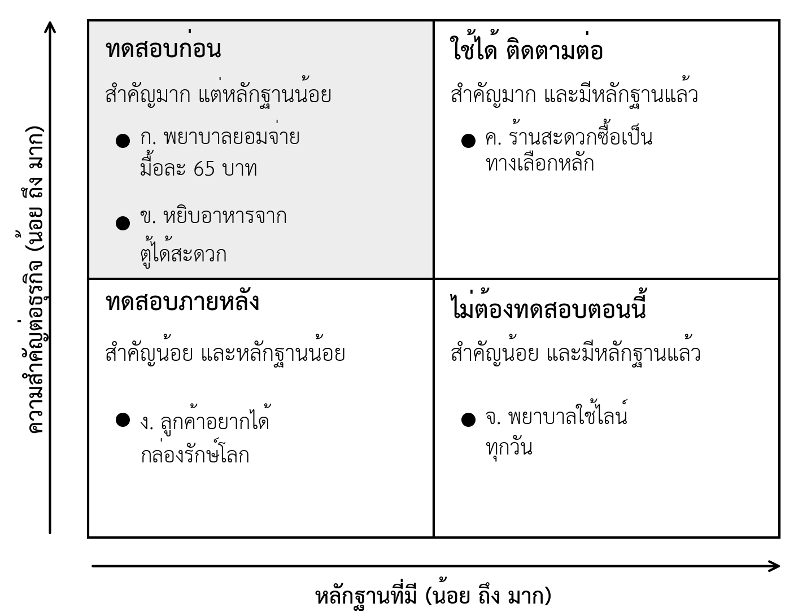

บทที่ 6 การทดสอบตลาด และการวิเคราะห์ศักยภาพของตลาด
เมื่อศึกษาบทนี้จบแล้ว นิสิตสามารถ
- อธิบายเหตุผลที่ธุรกิจใหม่ต้องทดสอบข้อสมมติก่อนลงทุน และจำแนกระดับความแข็งของหลักฐานได้
- ใช้แผนที่ข้อสมมติระบุข้อสมมติที่ต้องทดสอบก่อน 1–2 ข้อได้
- จับคู่วิธีทดสอบแบบประหยัดกับข้อสมมติแต่ละประเภทได้
- จัดทำบัตรทดสอบที่กำหนดเกณฑ์ผ่านไว้ล่วงหน้า และบันทึกผลด้วยบัตรบันทึกการเรียนรู้ได้
- คำนวณขนาดตลาด TAM SAM และ SOM แบบบนลงล่างและล่างขึ้นบนได้
- ระบุส่วนของ Canvas ที่ต้องปรับจากผลทดสอบ และอธิบายเหตุผลของการปรับทิศหรือเดินต่อได้
- จัดทำงานด่าน 3 คุณค่าที่ส่งมอบแก่ลูกค้าและผลการทดสอบตลาดของกลุ่มได้ (ใบงานที่ 3)
ความนำ
ในบทที่ 5 แต่ละกลุ่มออกไปสัมภาษณ์ลูกค้า และพบว่าความต้องการบางข้อตรงกับที่คิด บางข้อไม่ตรง ข้อมูลจากการสัมภาษณ์ช่วยให้ทีมเข้าใจลูกค้ามากขึ้น แต่ยังเป็นสิ่งที่ลูกค้า "พูด" ยังไม่ใช่สิ่งที่ลูกค้า "ทำ" คำถามสำคัญที่ยังไม่มีคำตอบคือ เมื่อมีสินค้าหรือบริการจริง ลูกค้าจะซื้อหรือไม่ ในราคาเท่าใด และมีลูกค้ามากพอให้ธุรกิจอยู่รอดหรือไม่
บทนี้ว่าด้วยการทดสอบตลาด คือการออกแบบการทดลองขนาดเล็กเพื่อหาหลักฐานจากการกระทำของลูกค้า ก่อนลงเงินและเวลาจำนวนมาก เริ่มจากเหตุผลที่ต้องทดสอบ ความแข็งของหลักฐาน และวิธีเลือกข้อสมมติที่สำคัญที่สุด ต่อด้วยวิธีทดสอบที่ใช้ต้นทุนต่ำ การกำหนดเกณฑ์ผ่านล่วงหน้า และการอ่านผล จากนั้นอธิบายการประเมินขนาดตลาดเบื้องต้น และปิดด้วยการตัดสินใจหลังได้ผลทดสอบว่าจะเดินต่อหรือปรับทิศ
บทนี้เป็นฉบับย่อตามแผนการสอน กลุ่มทดสอบข้อสมมติสำคัญเพียง 1–2 ข้อ ผลงานของบทคืองานด่าน 3 ที่นำเสนอในสัปดาห์ที่ 11 ซึ่งรวมความเข้าใจลูกค้าจากบทที่ 5 กับผลการทดสอบตลาดจากบทนี้
6.1 ทำไมต้องทดสอบก่อนลงทุน
ธุรกิจใหม่ส่วนใหญ่ไม่ได้ล้มเหลวเพราะทำสินค้าไม่ได้ แต่ล้มเหลวเพราะทำสินค้าที่มีคนต้องการไม่มากพอ หรือมีคนต้องการแต่ไม่ยอมจ่ายในราคาที่ทำให้ธุรกิจอยู่ได้ การค้นพบความจริงนี้หลังจากลงทุนไปแล้วมีต้นทุนสูงมาก การทดสอบตลาดจึงเป็นวิธีซื้อข้อมูลด้วยต้นทุนต่ำก่อนตัดสินใจครั้งใหญ่ Ries (2011) อธิบายกระบวนการนี้ว่าเป็นวงจร สร้าง วัด เรียนรู้ (Build–Measure–Learn) คือสร้างสิ่งที่เล็กที่สุดเพื่อทดสอบ วัดปฏิกิริยาของลูกค้า แล้วเรียนรู้ว่าจะทำอะไรต่อ วงจรยิ่งสั้น ทีมยิ่งเรียนรู้ได้มากในเวลาเท่าเดิม
การทดสอบมีประโยชน์เมื่อให้หลักฐานที่น่าเชื่อถือ หลักฐานจากลูกค้ามีความแข็งไม่เท่ากัน หลักทั่วไปคือ ยิ่งลูกค้าต้องสละสิ่งที่มีค่าเพื่อแสดงความต้องการ หลักฐานยิ่งแข็ง (Bland & Osterwalder, 2019) ตารางที่ 6.1 แสดงระดับของหลักฐาน
ตารางที่ 6.1 ระดับความแข็งของหลักฐานจากลูกค้า
| ระดับ | สิ่งที่ลูกค้าให้ | ตัวอย่าง | ความแข็ง |
|---|---|---|---|
| ความเห็น | คำพูด | "น่าสนใจ" "ดีจัง" กดถูกใจโพสต์ | อ่อนที่สุด |
| ความตั้งใจ | คำตอบเรื่องอนาคต | "ถ้ามีจะซื้อ" ตอบแบบสอบถามว่าสนใจ | อ่อน |
| ความผูกพันด้วยเวลา | เวลาหรือความสนใจ | ลงทะเบียนรับข่าว นัดทดลองใช้แล้วมาจริง | ปานกลาง |
| ความผูกพันด้วยชื่อเสียง | ความน่าเชื่อถือของตน | แนะนำเพื่อนให้ลอง แชร์ต่อพร้อมรับรอง | ปานกลางถึงแข็ง |
| ความผูกพันด้วยเงิน | เงิน | วางมัดจำ สั่งจองล่วงหน้า ซื้อจริง ซื้อซ้ำ | แข็งที่สุด |
นิสิตควรตั้งเป้าให้การทดสอบในงานด่าน 3 ได้หลักฐานอย่างน้อยระดับความผูกพันด้วยเวลา และถ้าเป็นไปได้ให้ถึงระดับความผูกพันด้วยเงิน เพราะคำตอบในแบบสอบถามว่า "สนใจ" จำนวนมากยังบอกได้น้อยว่าลูกค้าจะจ่ายเงินจริง
6.2 เลือกข้อสมมติสำคัญที่สุด 1–2 ข้อ
กลุ่มมีข้อสมมติจำนวนมากใน Lean Canvas และ Business Model Canvas แต่มีเวลาทดสอบจำกัด จึงต้องเลือกข้อที่คุ้มค่าที่สุด ข้อสมมติของธุรกิจใหม่แบ่งได้เป็น 3 ประเภท (Bland & Osterwalder, 2019) ได้แก่ ด้านความต้องการ (Desirability) คือลูกค้าต้องการสิ่งนี้หรือไม่ ด้านความเป็นไปได้ (Feasibility) คือทีมทำและส่งมอบได้หรือไม่ และ ด้านความคุ้มค่า (Viability) คือทำแล้วมีรายได้มากกว่าต้นทุนหรือไม่ ทั้งสามประเภทตรงกับความเสี่ยงด้านลูกค้า ด้านสินค้า และด้านตลาดในบทที่ 3 ตารางที่ 6.2 แสดงตัวอย่าง
ตารางที่ 6.2 ประเภทของข้อสมมติและตัวอย่าง (กรณีสมมติเพื่อการสอน: บริการอาหารหลังเลิกเวร)
| ประเภท | คำถาม | ช่องใน Canvas ที่เกี่ยวข้อง | ตัวอย่างข้อสมมติ |
|---|---|---|---|
| ความต้องการ | ลูกค้าต้องการและจะซื้อหรือไม่ | กลุ่มลูกค้า คุณค่า ช่องทาง ความสัมพันธ์ | พยาบาลเวรดึกจะสั่งอาหารล่วงหน้าแทนการซื้อร้านสะดวกซื้อ |
| ความเป็นไปได้ | ทีมทำและส่งมอบได้หรือไม่ | กิจกรรม ทรัพยากร พันธมิตร | ทีมเติมอาหารในตู้ได้ทันก่อนเลิกเวรทุกคืน |
| ความคุ้มค่า | รายได้มากกว่าต้นทุนหรือไม่ | กระแสรายได้ โครงสร้างต้นทุน | พยาบาลยอมจ่ายมื้อละ 65 บาท ซึ่งสูงพอครอบคลุมต้นทุน |
6.2.1 แผนที่ข้อสมมติ
แผนที่ข้อสมมติ (Assumption map) คือเครื่องมือจัดลำดับข้อสมมติด้วย 2 แกน แกนตั้งคือความสำคัญต่อธุรกิจ หมายถึงถ้าข้อสมมตินี้ผิด ธุรกิจจะไปต่อไม่ได้หรือไม่ แกนนอนคือหลักฐานที่มีอยู่ในวันนี้ ข้อสมมติที่อยู่มุมบนซ้าย คือสำคัญมากแต่หลักฐานน้อย เป็นข้อที่ต้องทดสอบก่อน ภาพที่ 6.1 แสดงแผนที่และตัวอย่างการวางข้อสมมติ

ในตัวอย่างนี้ ข้อสมมติ ค. ว่าร้านสะดวกซื้อเป็นทางเลือกหลักมีหลักฐานจากการสัมภาษณ์แล้ว ข้อสมมติ จ. ว่าพยาบาลใช้ไลน์ทุกวันไม่สำคัญมากและมีหลักฐานแล้ว ส่วนข้อสมมติ ง. เรื่องกล่องรักษ์โลกสำคัญน้อยในระยะนี้ ข้อสมมติที่ต้องทดสอบก่อนคือ ก. ว่าพยาบาลยอมจ่ายมื้อละ 65 บาท และ ข. ว่าการหยิบอาหารจากตู้สะดวกพอ เพราะถ้าผิด ธุรกิจทั้งหมดต้องเปลี่ยน วิธีวางข้อสมมติบนแผนที่ที่ได้ผลคือให้ทุกคนในกลุ่มเขียนข้อสมมติลงกระดาษโน้ตแผ่นละข้อ แล้ววางพร้อมกัน จากนั้นคุยเฉพาะแผ่นที่สมาชิกวางต่างกันมาก
6.3 วิธีทดสอบแบบประหยัด
เมื่อเลือกข้อสมมติได้แล้ว ขั้นต่อไปคือเลือกวิธีทดสอบที่ถูกที่สุดที่ยังให้หลักฐานแข็งพอสำหรับการตัดสินใจ ไม่จำเป็นต้องสร้างสินค้าเสร็จก่อนทดสอบ วิธีส่วนใหญ่ในตารางที่ 6.3 ทำได้ภายใน 1–2 สัปดาห์ด้วยเงินไม่กี่ร้อยบาท
ตารางที่ 6.3 วิธีทดสอบแบบประหยัดและข้อสมมติที่เหมาะ
| วิธีทดสอบ | ลักษณะ | เหมาะกับข้อสมมติ | ความแข็งของหลักฐาน | ข้อควรระวัง |
|---|---|---|---|---|
| สัมภาษณ์ลูกค้า | คุยเรื่องเหตุการณ์จริงในอดีต | ความต้องการ: มีปัญหาจริงหรือไม่ | อ่อนถึงปานกลาง | ไม่บอกว่าจะซื้อจริงหรือไม่ |
| หน้าเว็บทดสอบ (Landing page) | หน้าเว็บอธิบายสินค้าพร้อมปุ่มลงทะเบียนหรือสั่งจอง | ความต้องการ: คุณค่าดึงดูดพอหรือไม่ | ปานกลาง | ต้องมีผู้เข้าชมที่ตรงกลุ่มเป้าหมายมากพอ |
| ขายทดลอง (Pop-up, mock sale) | เปิดขายจริงในเวลาและพื้นที่จำกัด | ความต้องการและความคุ้มค่า | แข็ง | ต้องปฏิบัติตามกฎของพื้นที่และความปลอดภัยของสินค้า |
| สั่งจองล่วงหน้า (Pre-sale) | รับเงินหรือมัดจำก่อนผลิต | ความคุ้มค่า: ยอมจ่ายราคานี้หรือไม่ | แข็งมาก | ต้องส่งมอบได้จริง หรือคืนเงินเต็มจำนวน |
| บริการด้วยมือ (Concierge) | ทีมให้บริการเองทีละรายแบบที่ลูกค้ารู้ | ความต้องการและความเป็นไปได้ | แข็ง | ขยายไม่ได้ ใช้เพื่อเรียนรู้เท่านั้น |
| ระบบที่ทำด้วยคนเบื้องหลัง (Wizard of Oz) | ลูกค้าเห็นเป็นระบบ แต่ทีมทำงานด้วยมือเบื้องหลัง | ความต้องการ: ลูกค้าใช้ระบบแบบนี้หรือไม่ | แข็ง | ต้องไม่หลอกลวงลูกค้าในเรื่องที่มีผลต่อการตัดสินใจ |
| ผลิตภัณฑ์ต้นแบบขั้นต่ำ (Minimum viable product) | สินค้ารุ่นแรกที่มีเฉพาะส่วนสำคัญ | ความต้องการและความเป็นไปได้ | แข็ง | อย่าเพิ่มคุณสมบัติจนกลายเป็นสินค้าเต็มรูปแบบ |
6.3.1 เลือกวิธีให้ตรงกับข้อสมมติ
วิธีทดสอบต้องตอบข้อสมมติที่เลือกโดยตรง ถ้าข้อสมมติคือ "ลูกค้ายอมจ่าย 65 บาท" การถามในแบบสอบถามว่ายอมจ่ายเท่าไรไม่ได้ทดสอบข้อสมมตินี้จริง เพราะลูกค้าไม่ต้องจ่าย วิธีที่ตรงกว่าคือการสั่งจองล่วงหน้าที่ราคา 65 บาท หรือการขายทดลองจริง ในทางกลับกัน ถ้าข้อสมมติคือ "ทีมเติมอาหารในตู้ได้ทันทุกคืน" วิธีที่ตรงคือการทำบริการด้วยมือจริง 1 สัปดาห์แล้วจับเวลา ไม่ใช่การถามลูกค้า
การทดสอบทุกแบบต้องซื่อสัตย์กับลูกค้า วิธีระบบที่ทำด้วยคนเบื้องหลังใช้ได้เมื่อการที่คนทำงานแทนระบบไม่ทำให้ลูกค้าเสียประโยชน์ และการสั่งจองล่วงหน้าต้องบอกชัดว่าเป็นการเปิดจองรอบทดลอง พร้อมเงื่อนไขการคืนเงินถ้าส่งมอบไม่ได้ ถ้าขายสินค้าอาหาร ต้องคำนึงถึงความสะอาดและความปลอดภัยของผู้บริโภค และปรึกษาผู้สอนก่อนถ้าไม่แน่ใจ
6.3.2 ทำหน้าเว็บทดสอบและการขายทดลองให้ได้ผล
หน้าเว็บทดสอบที่ได้ผลไม่จำเป็นต้องสวย แต่ต้องมีองค์ประกอบครบ 5 ส่วน ส่วนแรกคือหัวข้อที่เป็นคุณค่าเฉพาะตัวจาก Lean Canvas ในประโยคเดียว ส่วนที่สองคือคำอธิบายสั้นว่าลูกค้าได้อะไร เมื่อไร และอย่างไร ส่วนที่สามคือราคาที่ชัดเจน เพราะหน้าเว็บที่ไม่บอกราคาทดสอบได้แค่ความสนใจ ไม่ได้ทดสอบความยอมจ่าย ส่วนที่สี่คือปุ่มให้ลูกค้าทำสิ่งเดียวที่ทีมต้องการวัด เช่น สั่งจองหรือลงทะเบียน และส่วนสุดท้ายคือข้อความบอกว่าเป็นบริการรอบทดลองพร้อมเงื่อนไขการคืนเงิน หน้าเว็บสร้างได้ด้วยเครื่องมือสร้างเว็บไซต์หรือแบบฟอร์มออนไลน์ที่ไม่มีค่าใช้จ่าย
สิ่งที่มักถูกลืมคือแหล่งของผู้เข้าชม หน้าเว็บที่ไม่มีคนเข้าชมทดสอบอะไรไม่ได้ และหน้าเว็บที่มีแต่เพื่อนของทีมเข้าชมให้ผลที่ดีเกินจริง ทีมต้องพาผู้เข้าชมที่ตรงกับกลุ่มเป้าหมายมาที่หน้าเว็บ เช่น โพสต์ในกลุ่มออนไลน์ที่ลูกค้าอยู่ หรือติดป้ายพร้อมคิวอาร์โค้ดในสถานที่ที่ลูกค้าผ่าน และบันทึกว่าผู้เข้าชมมาจากช่องทางใด เพราะผลของแต่ละช่องทางบอกได้ด้วยว่าช่องทางใดในช่อง Canvas ใช้ได้
การขายทดลองต้องเตรียมแบบบันทึกก่อนเริ่ม อย่างน้อยต้องบันทึกจำนวนคนที่เดินผ่าน จำนวนคนที่หยุดดู จำนวนคนที่ซื้อ เวลาที่ขายได้ และคำถามหรือข้อติที่ลูกค้าพูด สัดส่วนระหว่างคนที่หยุดดูกับคนที่ซื้อบอกได้มากกว่ายอดขายรวม เพราะถ้ามีคนหยุดดูมากแต่ซื้อน้อย ปัญหาอาจอยู่ที่ราคาหรือการนำเสนอ ไม่ใช่ความต้องการ การขายในพื้นที่ของมหาวิทยาลัยหรือหน่วยงานต้องขออนุญาตเจ้าของพื้นที่ก่อนทุกครั้ง
6.4 กำหนดเกณฑ์ผ่านล่วงหน้าและการอ่านผล
6.4.1 บัตรทดสอบ
ข้อผิดพลาดที่พบบ่อยที่สุดในการทดสอบคือการทดสอบก่อนแล้วค่อยตัดสินว่าผลดีพอหรือไม่ เมื่อเห็นผลแล้ว ทีมมักตีความให้ผ่านเสมอ เพราะอยากให้ไอเดียของตนไปต่อ วิธีป้องกันคือเขียน บัตรทดสอบ (Test card) ก่อนเริ่มทดสอบ บัตรทดสอบมี 4 ส่วน คือ ข้อสมมติที่เชื่อ วิธีทดสอบ สิ่งที่วัด และ เกณฑ์ผ่าน (Pass criterion) ซึ่งเป็นตัวเลขที่บอกว่าผลระดับใดถือว่าข้อสมมติถูก (Bland & Osterwalder, 2019) ตารางที่ 6.4 แสดงตัวอย่าง
ตารางที่ 6.4 ตัวอย่างบัตรทดสอบ (กรณีสมมติเพื่อการสอน)
| ส่วนของบัตร | บัตรที่ 1 | บัตรที่ 2 |
|---|---|---|
| เราเชื่อว่า | พยาบาลเวรดึกยอมจ่ายมื้อละ 65 บาทสำหรับอาหารที่รับได้ทันทีหลังเลิกเวร | การหยิบอาหารจากตู้ในห้องพักพยาบาลสะดวกพอ ไม่หยิบผิดกล่อง |
| วิธีทดสอบ | เปิดสั่งจองล่วงหน้าและจ่ายเงินจริงในหอผู้ป่วย 3 แห่ง เป็นเวลา 7 คืน | ให้บริการด้วยมือ 7 คืน ติดฉลากรหัสบนกล่อง และสอบถามหลังรับอาหาร |
| สิ่งที่วัด | จำนวนมื้อที่จ่ายเงินจริงต่อคืน จากพยาบาลเวรดึกประมาณ 60 คนต่อคืน | จำนวนครั้งที่หยิบผิดกล่องหรืออาหารไม่อยู่ในตู้ตอนเลิกเวร |
| เกณฑ์ผ่าน | เฉลี่ยไม่น้อยกว่า 15 มื้อต่อคืน (ร้อยละ 25) | หยิบผิดหรืออาหารไม่พร้อมไม่เกิน 2 ครั้งตลอด 7 คืน |
เกณฑ์ผ่านควรมาจากเหตุผล ไม่ใช่ตัวเลขที่ตั้งขึ้นลอย ๆ ในตัวอย่างนี้ เกณฑ์ 15 มื้อต่อคืนมาจากการคำนวณว่าต้องขายอย่างน้อยเท่านี้จึงจะคุ้มค่าแรงของผู้เติมอาหารหนึ่งคน ซึ่งเชื่อมกับช่องโครงสร้างต้นทุนใน Canvas
6.4.2 การอ่านผลและบัตรบันทึกการเรียนรู้
เมื่อทดสอบเสร็จ ทีมเปรียบเทียบผลกับเกณฑ์ผ่านที่ตั้งไว้ แล้วบันทึกลงใน บัตรบันทึกการเรียนรู้ (Learning card) ซึ่งมี 4 ส่วน คือ เราเชื่อว่าอะไร เราสังเกตเห็นอะไร เราได้เรียนรู้อะไร และเราจะทำอะไรต่อ ส่วนสุดท้ายสำคัญที่สุด เพราะการทดสอบที่ไม่นำไปสู่การตัดสินใจคือการเสียเวลา ตารางที่ 6.5 แสดงผลของบัตรที่ 1
ตารางที่ 6.5 ตัวอย่างบัตรบันทึกการเรียนรู้ของบัตรทดสอบที่ 1 (กรณีสมมติเพื่อการสอน)
| ส่วนของบัตร | รายละเอียด |
|---|---|
| เราเชื่อว่า | พยาบาลเวรดึกยอมจ่ายมื้อละ 65 บาท เฉลี่ยไม่น้อยกว่า 15 มื้อต่อคืน |
| เราสังเกตเห็น | 7 คืนขายได้รวม 77 มื้อ เฉลี่ย 11 มื้อต่อคืน ต่ำกว่าเกณฑ์ แต่คืนวันศุกร์และวันเสาร์ขายได้คืนละ 19 และ 21 มื้อ ผู้ซื้อ 6 คนสั่งเกิน 3 คืน |
| เราได้เรียนรู้ | ราคา 65 บาทไม่ใช่อุปสรรคหลัก เพราะมีผู้ซื้อซ้ำ แต่ความต้องการสูงเฉพาะคืนที่งานหนัก และผู้ซื้อบางคนลืมสั่งในวันธรรมดา |
| เราจะทำอะไรต่อ | ทดสอบแบบสมาชิกรายสัปดาห์ที่ไม่ต้องสั่งทุกคืน อีก 7 คืน โดยคงเกณฑ์ 15 มื้อต่อคืน |
การอ่านผลต้องระวัง 3 เรื่อง เรื่องแรก อย่าเปลี่ยนเกณฑ์หลังเห็นผล ถ้าคิดว่าเกณฑ์ไม่เหมาะ ให้ตั้งเกณฑ์ใหม่สำหรับการทดสอบรอบถัดไป เรื่องที่สอง ผลจากกลุ่มตัวอย่างเล็กมีความไม่แน่นอนสูง การได้ผลใกล้เกณฑ์มาก เช่น ได้ร้อยละ 9 เมื่อเกณฑ์คือร้อยละ 10 ควรถือว่ายังสรุปไม่ได้และทดสอบเพิ่ม และเรื่องที่สาม ผลที่ไม่ผ่านเกณฑ์ไม่ได้แปลว่าไอเดียล้มเหลวเสมอ รายละเอียดในผลมักบอกทางที่ควรปรับ ดังตัวอย่างที่ความต้องการสูงเฉพาะบางคืน ซึ่งเป็นการใช้คำถามทบทวนในตารางที่ 1.8 ของบทที่ 1
6.4.3 ขนาดกลุ่มตัวอย่างและระยะเวลาทดสอบ
การทดสอบในงานด่าน 3 ไม่ใช่การวิจัยเชิงสถิติ แต่ต้องมีขนาดและระยะเวลาพอที่ผลจะไม่ขึ้นกับเหตุบังเอิญ หลักที่ใช้ได้ในวิชานี้มี 4 ข้อ ข้อแรก ระยะเวลาทดสอบอย่างน้อย 5 วันทำการ เพื่อให้เห็นความแตกต่างระหว่างวัน ดังตัวอย่างในตารางที่ 6.5 ที่ยอดขายคืนวันศุกร์และวันเสาร์ต่างจากวันอื่นมาก ข้อที่สอง หลีกเลี่ยงช่วงที่ผิดปกติ เช่น สัปดาห์สอบ วันหยุดยาว หรือช่วงที่มีงานพิเศษ ถ้าเลี่ยงไม่ได้ให้ระบุไว้ในผล ข้อที่สาม สำหรับหน้าเว็บทดสอบ ควรมีผู้เข้าชมที่ตรงกลุ่มเป้าหมายอย่างน้อย 100 คนก่อนสรุปอัตราการสั่งจอง เพราะถ้ามีผู้เข้าชมเพียง 20 คน การสั่งเพิ่มหรือลดเพียง 1 คนจะเปลี่ยนอัตราถึงร้อยละ 5 ข้อสุดท้าย ใช้วิธีวัดเดียวกันตลอดการทดสอบ ถ้าเปลี่ยนราคาหรือข้อความกลางทาง ให้นับเป็นการทดสอบรอบใหม่
อัตราที่ใช้บ่อยที่สุดคือ อัตราการเปลี่ยนเป็นผู้ซื้อ (Conversion rate) คำนวณจากจำนวนคนที่ทำสิ่งที่ต้องการ หารด้วยจำนวนคนที่เห็นข้อเสนอ แล้วคูณด้วย 100 ตัวอย่างเช่น ถ้าหน้าเว็บมีผู้เข้าชม 400 คน และมีผู้สั่งจอง 36 คน อัตราการเปลี่ยนเท่ากับ 36 ÷ 400 × 100 = ร้อยละ 9 ถ้าเกณฑ์ผ่านคือร้อยละ 10 ผลนี้ใกล้เกณฑ์มาก ทีมจึงไม่ควรสรุปว่าผ่านหรือไม่ผ่าน แต่ควรทดสอบเพิ่มด้วยผู้เข้าชมอีกกลุ่ม หรือดูว่าผู้เข้าชมจากช่องทางใดสั่งจองในอัตราที่สูงกว่า
6.5 ประเมินศักยภาพตลาดเบื้องต้น
เมื่อมีหลักฐานว่าลูกค้าบางส่วนซื้อจริง คำถามต่อมาคือตลาดใหญ่พอหรือไม่ การประเมินขนาดตลาดเบื้องต้นใช้ 3 ระดับ ได้แก่ ตลาดทั้งหมด (Total addressable market: TAM) คือมูลค่าความต้องการทั้งหมดของสิ่งที่ธุรกิจเสนอ ตลาดที่เข้าถึงได้ (Serviceable available market: SAM) คือส่วนของตลาดทั้งหมดที่ธุรกิจเข้าถึงได้ด้วยรูปแบบธุรกิจ ช่องทาง และพื้นที่ของตน และ ตลาดที่คาดว่าจะได้ (Serviceable obtainable market: SOM) คือส่วนที่ธุรกิจคาดว่าจะได้จริงในระยะใกล้ เมื่อคำนึงถึงคู่แข่งและกำลังของทีม
6.5.1 แบบบนลงล่างและแบบล่างขึ้นบน
การคำนวณมี 2 แบบ แบบบนลงล่าง (Top-down) เริ่มจากตัวเลขตลาดใหญ่ เช่น จำนวนประชากรหรือมูลค่าอุตสาหกรรม แล้วตัดลงตามสัดส่วนที่เกี่ยวข้อง ส่วน แบบล่างขึ้นบน (Bottom-up) เริ่มจากหน่วยที่เล็กที่สุดที่ทีมรู้จริง เช่น ยอดขายต่อวันต่อจุดขายจากการทดสอบ แล้วคูณด้วยจำนวนจุดขายที่เข้าถึงได้ ธุรกิจใหม่ควรใช้แบบล่างขึ้นบนเป็นหลัก เพราะเชื่อมกับหลักฐานของทีมโดยตรง และใช้แบบบนลงล่างตรวจว่าตัวเลขไม่เกินความเป็นจริง ตารางที่ 6.6 แสดงตัวอย่างการคำนวณแบบล่างขึ้นบน
ตารางที่ 6.6 ตัวอย่างการประมาณขนาดตลาดแบบล่างขึ้นบน (กรณีสมมติเพื่อการสอน: ตัวเลขเพื่อสาธิตวิธีคำนวณ)
| ระดับ | ขอบเขต | การคำนวณ | มูลค่าต่อปี (บาท) |
|---|---|---|---|
| TAM | คนทำงานกะดึกทุกอาชีพในจังหวัด ประมาณ 1,500 คนต่อคืน | 1,500 คน × 365 คืน × 65 บาท | 35,587,500 |
| SAM | พยาบาลเวรดึกในโรงพยาบาล 8 แห่งของจังหวัด ประมาณ 180 คนต่อคืน | 180 คน × 365 คืน × 65 บาท | 4,270,500 |
| SOM | โรงพยาบาลนำร่อง 1 แห่ง ร้อยละ 25 ของพยาบาลเวรดึก 60 คน หรือ 15 มื้อต่อคืน | 15 มื้อ × 365 คืน × 65 บาท | 355,875 |
ตัวเลขในตารางนี้เป็นตัวเลขสมมติเพื่อสาธิตวิธีคำนวณ ในงานด่าน 3 กลุ่มต้องใช้ตัวเลขจากแหล่งที่มีอยู่จริงพร้อมระบุแหล่งและปี เช่น จำนวนบุคลากรจากรายงานของหน่วยงาน หรือจำนวนที่ได้จากการนับเอง และต้องใช้อัตราการซื้อจากผลการทดสอบของกลุ่ม ไม่ใช่ร้อยละที่ตั้งขึ้นเอง
6.5.2 กับดักของการประมาณขนาดตลาด
กับดักที่พบบ่อยที่สุดคือการคิดว่า "ถ้าได้ลูกค้าเพียงร้อยละ 1 ของตลาดทั้งหมดก็พอ" การคิดแบบนี้ฟังดูระมัดระวัง แต่ไม่ได้บอกว่าธุรกิจจะได้ลูกค้าร้อยละ 1 นั้นได้อย่างไร ผู้ลงทุนและผู้ประเมินจึงไม่ให้น้ำหนักกับตัวเลขแบบนี้ ตัวเลข SOM ที่น่าเชื่อถือต้องอธิบายได้ว่ามาจากช่องทางใด จำนวนลูกค้าที่เข้าถึงได้ต่อเดือนเท่าใด และอัตราการซื้อจากหลักฐานใด
ข้อสังเกตอีกข้อจากตารางที่ 6.6 คือ SOM ของตัวอย่างนี้ประมาณ 3.6 แสนบาทต่อปี ซึ่งเพียงพอสำหรับธุรกิจขนาดเล็กของนิสิต แต่ไม่พอสำหรับผู้ลงทุนที่ต้องการธุรกิจโตเร็ว ขนาดตลาดจึงต้องดูคู่กับประเภทของธุรกิจที่กลุ่มเลือกในบทที่ 1 และแหล่งเงินทุนที่จะเรียนในบทที่ 7
6.6 ปรับโมเดลจากผลทดสอบ: ปรับทิศหรือเดินต่อ
หลังทดสอบ ทีมมีทางเลือก 3 ทาง คือ เดินต่อ (Persevere) เมื่อผลผ่านเกณฑ์ และขยายการทดสอบไปยังข้อสมมติถัดไป ปรับทิศ (Pivot) เมื่อผลไม่ผ่านแต่มีสัญญาณว่าควรเปลี่ยนส่วนใดส่วนหนึ่งของโมเดล และ หยุด เมื่อหลักฐานชี้ว่าไม่มีความต้องการมากพอในทุกทางที่ลองแล้ว Ries (2011) อธิบายว่าการปรับทิศคือการเปลี่ยนโมเดลธุรกิจบางส่วนโดยคงสิ่งที่เรียนรู้ไว้ ไม่ใช่การเริ่มใหม่ทั้งหมด ตารางที่ 6.7 แสดงประเภทของการปรับทิศที่พบบ่อย
ตารางที่ 6.7 ประเภทของการปรับทิศและสัญญาณที่บอก
| ประเภท | สิ่งที่เปลี่ยน | สัญญาณจากผลทดสอบ | ช่องใน Canvas ที่ต้องแก้ |
|---|---|---|---|
| เปลี่ยนกลุ่มลูกค้า | ขายให้ลูกค้ากลุ่มอื่นที่มีปัญหาเดียวกันรุนแรงกว่า | ผู้ซื้อจริงไม่ใช่กลุ่มที่ทีมตั้งใจ | กลุ่มลูกค้า ช่องทาง ความสัมพันธ์ |
| เปลี่ยนปัญหา | แก้ปัญหาอื่นที่ลูกค้าพูดถึงบ่อยกว่า | ลูกค้าพูดถึงปัญหาอื่นซ้ำ ๆ ระหว่างทดสอบ | คุณค่าที่เสนอ |
| ขยายส่วนหนึ่งเป็นทั้งหมด | ใช้คุณสมบัติเดียวที่ลูกค้าใช้จริงเป็นสินค้าหลัก | ลูกค้าใช้เพียงส่วนเดียวของสินค้า | คุณค่า กิจกรรมหลัก |
| เปลี่ยนช่องทาง | ขายผ่านช่องทางอื่น | ลูกค้าสนใจแต่ซื้อผ่านช่องทางเดิมไม่สะดวก | ช่องทาง พันธมิตร |
| เปลี่ยนรูปแบบรายได้ | เปลี่ยนจากขายรายครั้งเป็นสมาชิก หรือในทางกลับกัน | ลูกค้าซื้อซ้ำแต่ลืมสั่ง หรือไม่อยากผูกมัด | กระแสรายได้ ความสัมพันธ์ |
ในตัวอย่างบัตรบันทึกการเรียนรู้ในตารางที่ 6.5 สิ่งที่ทีมทำคือการเปลี่ยนรูปแบบรายได้จากการสั่งรายคืนเป็นสมาชิกรายสัปดาห์ ซึ่งเป็นการปรับทิศขนาดเล็กที่ยังคงกลุ่มลูกค้าและคุณค่าเดิม ทุกครั้งที่ปรับ ทีมต้องบันทึก Canvas ฉบับใหม่พร้อมวันที่ และระบุว่าปรับช่องใดเพราะผลทดสอบใด ซึ่งเป็นเกณฑ์สำคัญของรูบริกที่ 3
6.6.1 สัญญาณว่าควรหยุด
การหยุดไม่ใช่ความล้มเหลวของทีม แต่เป็นการใช้หลักลงเท่าที่ยอมเสียได้ในบทที่ 1 อย่างถูกต้อง สัญญาณว่าควรพิจารณาหยุดหรือเปลี่ยนไอเดียใหม่มี 3 ข้อ ข้อแรก ทดสอบความต้องการแล้วหลายรอบด้วยวิธีที่ต่างกัน แต่ไม่มีลูกค้าทำสิ่งที่ผูกพันเลย แม้แต่การลงทะเบียน ข้อที่สอง ลูกค้าที่สัมภาษณ์ไม่ได้มองว่าปัญหานี้สำคัญ และมีทางเลือกที่พอใจอยู่แล้ว ข้อที่สาม ต้นทุนที่พบจากการทดสอบสูงกว่าราคาที่ลูกค้ายอมจ่ายมาก จนไม่มีการปรับทิศใดในตารางที่ 6.7 ที่ทำให้คุ้มค่าได้
ในรายวิชานี้ กลุ่มที่ได้ผลแบบนี้ในงานด่าน 3 ยังได้คะแนนตามรูบริกที่ 3 ถ้าออกแบบการทดสอบดี รายงานผลตามจริง และอธิบายการตัดสินใจได้ เพราะรูบริกประเมินคุณภาพของกระบวนการเรียนรู้ ไม่ได้ประเมินว่าไอเดียผ่านหรือไม่ กลุ่มควรปรึกษาผู้สอนเพื่อเลือกไอเดียสำรองจากงานด่าน 1 ซึ่งได้ประเมินไว้แล้ว แทนการเริ่มหาไอเดียใหม่จากศูนย์
6.7 งานวิจัยที่เกี่ยวข้อง
งานวิจัยในช่วงหลังศึกษาว่าการทดลองอย่างเป็นระบบช่วยธุรกิจใหม่ได้จริงหรือไม่ ตารางที่ 6.8 สรุปงานวิจัยที่เกี่ยวข้อง ข้อสรุปร่วมคือการทดลองช่วยลดต้นทุนของการตัดสินใจผิด แต่ได้ผลเมื่อทีมกำหนดสมมติฐานและเกณฑ์ไว้ก่อน และใช้ผลไปตัดสินใจจริง
ตารางที่ 6.8 งานวิจัยที่เกี่ยวข้องกับการทดสอบตลาด
| งานวิจัย | ประเด็นที่ศึกษา | ข้อค้นพบสำคัญ | ข้อสรุปสำหรับนิสิต |
|---|---|---|---|
| Kerr และคณะ (2014) | ความเป็นผู้ประกอบการในฐานะการทดลอง | ผลของธุรกิจใหม่คาดการณ์ยากล่วงหน้า วิธีที่ดีคือทดลองด้วยต้นทุนต่ำแล้วตัดสินใจเป็นขั้น ๆ | ลงทุนทีละขั้นตามหลักฐาน |
| Camuffo และคณะ (2020) | การทดลองแบบสุ่มกับผู้ประกอบการระยะเริ่มต้น | ผู้ที่ได้รับการฝึกให้ตั้งสมมติฐานและทดสอบอย่างเป็นระบบ ตัดสินใจเลิกหรือปรับทิศได้เหมาะสมกว่า | เขียนบัตรทดสอบก่อนลงมือทุกครั้ง |
| Koning และคณะ (2022) | การทดลองแบบ A/B ในบริษัทสตาร์ตอัป | บริษัทที่ใช้การทดลองแบบ A/B มีผลการดำเนินงานที่ดีขึ้นและเปลี่ยนแปลงผลิตภัณฑ์มากขึ้น | เปรียบเทียบทางเลือกด้วยข้อมูลจริง ไม่ใช่ความชอบของทีม |
6.8 ข้อผิดพลาดที่พบบ่อยในการทดสอบตลาด
ข้อผิดพลาดในตารางที่ 6.9 พบบ่อยในงานด่าน 3 ของนิสิต ทุกข้อทำให้ผลทดสอบดูดีแต่ไม่ได้บอกว่าควรตัดสินใจอย่างไร
ตารางที่ 6.9 ข้อผิดพลาดที่พบบ่อยในการทดสอบตลาด
| ข้อผิดพลาด | ตัวอย่าง | วิธีแก้ |
|---|---|---|
| ทดสอบข้อสมมติที่ไม่สำคัญ | ทดสอบสีของโลโก้ก่อนรู้ว่ามีคนซื้อ | ใช้แผนที่ข้อสมมติเลือกข้อที่สำคัญมากแต่หลักฐานน้อย |
| ไม่มีเกณฑ์ผ่าน หรือตั้งหลังเห็นผล | "ได้ 30 คนก็ถือว่าดี" หลังเห็นว่าได้ 30 คน | เขียนบัตรทดสอบพร้อมเกณฑ์ก่อนเริ่ม |
| ใช้แบบสอบถามทดสอบการซื้อ | ถามว่า "จะซื้อไหม" กับคน 200 คน | ใช้การสั่งจองหรือขายทดลองจริง |
| กลุ่มตัวอย่างไม่ใช่ลูกค้าเป้าหมาย | ให้เพื่อนในคณะลองสินค้าสำหรับพนักงานโรงงาน | ทดสอบกับคนที่ตรงกับภาพตัวแทนลูกค้า |
| รายงานเฉพาะผลที่ดี | ไม่รายงานคืนที่ขายไม่ได้ | รายงานผลทุกข้อตามจริง |
| ทดสอบแล้วไม่ตัดสินใจ | สรุปว่า "ได้ข้อมูลที่น่าสนใจ" | เขียนส่วน "เราจะทำอะไรต่อ" ในบัตรบันทึกการเรียนรู้ทุกครั้ง |
| ขนาดตลาดมาจาก "ถ้าได้ร้อยละ 1" | ตลาดทั้งประเทศคูณร้อยละ 1 | คำนวณแบบล่างขึ้นบนจากผลทดสอบ |
นิสิตกลุ่มหนึ่งต้องการขายสลัดพร้อมทานส่งหอพักรอบมหาวิทยาลัยในราคากล่องละ 59 บาท กลุ่มโพสต์ภาพสลัดในกลุ่มออนไลน์ของนิสิต มีคนกดถูกใจ 82 คน และแสดงความเห็นว่าน่าทาน กลุ่มจึงสรุปว่าความต้องการสูงมาก และเตรียมสั่งซื้อกล่องบรรจุภัณฑ์ 500 ใบ
ก่อนสั่งซื้อ ผู้สอนให้กลุ่มเขียนบัตรทดสอบก่อน กลุ่มตั้งเกณฑ์ว่าภายใน 5 วันต้องมีผู้โอนเงินสั่งจองล่วงหน้าอย่างน้อย 30 กล่อง แล้วสร้างหน้าเว็บทดสอบที่มีปุ่มลงทะเบียนและปุ่มสั่งจองพร้อมจ่ายเงิน ผลคือมีผู้เข้าชม 410 คน ลงทะเบียนรับข่าว 40 คน แต่โอนเงินสั่งจองจริงเพียง 6 กล่อง
เมื่อโทรถามผู้ที่ลงทะเบียนแต่ไม่สั่ง 10 คน 7 คนบอกว่าอยากกินสลัดเป็นมื้อกลางวันระหว่างเรียน ไม่ใช่ที่หอพักตอนเย็น และ 4 คนบอกว่าราคา 59 บาทสูงกว่าข้าวกล่องที่กินอยู่ประจำ
คำถามชวนคิด หลักฐานแต่ละชิ้นในกรณีนี้อยู่ระดับใดในตารางที่ 6.1 ผลทดสอบผ่านเกณฑ์หรือไม่ และกลุ่มควรปรับทิศแบบใดในตารางที่ 6.7 ก่อนทดสอบรอบถัดไป
เมื่อศึกษาบทนี้แล้ว นิสิตสามารถอธิบายได้ว่าธุรกิจใหม่ต้องทดสอบก่อนลงทุน เพราะการค้นพบว่าลูกค้าไม่ต้องการหลังลงทุนแล้วมีต้นทุนสูง และการทดสอบตามวงจรสร้าง วัด เรียนรู้ ช่วยซื้อข้อมูลด้วยต้นทุนต่ำ นิสิตจำแนกความแข็งของหลักฐานจากความเห็น ความตั้งใจ ความผูกพันด้วยเวลา ชื่อเสียง จนถึงเงิน และใช้แผนที่ข้อสมมติระบุข้อสมมติด้านความต้องการ ความเป็นไปได้ หรือความคุ้มค่าที่สำคัญมากแต่หลักฐานน้อย เพื่อทดสอบก่อน
นิสิตจับคู่วิธีทดสอบแบบประหยัด เช่น หน้าเว็บทดสอบ การขายทดลอง การสั่งจองล่วงหน้า และบริการด้วยมือ ให้ตรงกับข้อสมมติ เขียนบัตรทดสอบที่มีเกณฑ์ผ่านก่อนเริ่ม อ่านผลอย่างระมัดระวังและบันทึกในบัตรบันทึกการเรียนรู้ คำนวณขนาดตลาด TAM SAM และ SOM โดยใช้แบบล่างขึ้นบนเป็นหลัก และตัดสินใจหลังทดสอบว่าจะเดินต่อ ปรับทิศ หรือหยุด พร้อมระบุส่วนของ Canvas ที่ปรับเพราะผลทดสอบ ผลของบทนี้คืองานด่าน 3 และโมเดลธุรกิจที่มีหลักฐานรองรับจะเป็นฐานของการวางแผนระดมทุนในบทที่ 7
- สร้าง วัด เรียนรู้ (Build–Measure–Learn)
- ด้านความต้องการ (Desirability)
- ด้านความเป็นไปได้ (Feasibility)
- ด้านความคุ้มค่า (Viability)
- แผนที่ข้อสมมติ (Assumption map)
- หน้าเว็บทดสอบ (Landing page)
- การสั่งจองล่วงหน้า (Pre-sale)
- บริการด้วยมือ (Concierge)
- บัตรทดสอบ (Test card)
- เกณฑ์ผ่าน (Pass criterion)
- บัตรบันทึกการเรียนรู้ (Learning card)
- ตลาดทั้งหมด (TAM) ตลาดที่เข้าถึงได้ (SAM) และตลาดที่คาดว่าจะได้ (SOM)
- แบบบนลงล่าง (Top-down) และแบบล่างขึ้นบน (Bottom-up)
- ปรับทิศ (Pivot) และเดินต่อ (Persevere)
คำถามทบทวน
- เพราะเหตุใดธุรกิจใหม่จึงควรทดสอบข้อสมมติก่อนลงทุน จงอธิบายโดยใช้วงจรสร้าง วัด เรียนรู้
- จงเรียงหลักฐานต่อไปนี้จากอ่อนไปแข็ง และให้เหตุผล: ลงทะเบียนรับข่าว กดถูกใจโพสต์ โอนเงินมัดจำ ตอบแบบสอบถามว่าสนใจ แนะนำเพื่อนให้มาซื้อ
- ข้อสมมติด้านความต้องการ ความเป็นไปได้ และความคุ้มค่าต่างกันอย่างไร จงยกตัวอย่างจากธุรกิจของกลุ่ม
- ข้อสมมติแบบใดที่ควรทดสอบก่อนตามแผนที่ข้อสมมติ และเพราะเหตุใด
- ถ้าข้อสมมติคือ "นิสิตยอมจ่ายค่าเช่าจักรยานวันละ 30 บาท" วิธีทดสอบใดในตารางที่ 6.3 เหมาะที่สุด และวิธีใดไม่เหมาะ
- เพราะเหตุใดต้องกำหนดเกณฑ์ผ่านก่อนเริ่มทดสอบ และเกณฑ์ผ่านที่ดีควรมาจากอะไร
- จากตารางที่ 6.5 ถ้าทีมเปลี่ยนเกณฑ์เป็น 10 มื้อต่อคืนหลังเห็นผล จะเกิดปัญหาอะไร
- จงคำนวณ SAM และ SOM ใหม่จากตารางที่ 6.6 ถ้าราคาเปลี่ยนเป็น 59 บาทต่อมื้อ
- เพราะเหตุใดตัวเลข "ถ้าได้ลูกค้าเพียงร้อยละ 1 ของตลาดทั้งหมด" จึงไม่น่าเชื่อถือ
- จากกรณีศึกษาสลัดพร้อมทาน จงตอบคำถามชวนคิดทั้ง 3 ข้อ และเขียนบัตรทดสอบสำหรับรอบถัดไป
ใบงานที่ 3 งานด่าน 3: คุณค่าที่ส่งมอบแก่ลูกค้าและผลการทดสอบตลาด
ให้แต่ละกลุ่มจัดทำงานด่าน 3 แล้วนำเสนอในชั้นเรียนสัปดาห์ที่ 11 กลุ่มละไม่เกิน 10 นาที และส่งไฟล์ PDF ใน Google Classroom ก่อนเริ่มเรียนสัปดาห์ที่ 11 งานนี้ประเมินด้วยรูบริกที่ 3 ในแผนบริหารการสอนประจำวิชา บัตรทดสอบต้องส่งให้ผู้สอนตรวจภายในสัปดาห์ที่ 10 ก่อนเริ่มทดสอบจริง
- ความเข้าใจลูกค้าจากกิจกรรมท้ายบทที่ 5: ภาพตัวแทนลูกค้าฉบับปรับปรุง รูปแบบที่พบซ้ำ และตารางจับคู่ความต้องการกับคุณค่า
- แผนที่ข้อสมมติของกลุ่ม และข้อสมมติสำคัญ 1–2 ข้อที่เลือกทดสอบ พร้อมเหตุผล
- บัตรทดสอบตามแบบตารางที่ 6.4 ที่ระบุวิธี กลุ่มตัวอย่าง สิ่งที่วัด และเกณฑ์ผ่าน พร้อมวันที่ที่ผู้สอนตรวจ
- ผลการทดสอบตามจริง และบัตรบันทึกการเรียนรู้ตามแบบตารางที่ 6.5
- การประเมินขนาดตลาด TAM SAM และ SOM แบบล่างขึ้นบน ระบุแหล่งและปีของตัวเลขทุกตัว และใช้อัตราการซื้อจากผลทดสอบ
- การตัดสินใจเดินต่อ ปรับทิศ หรือหยุด และ Canvas ฉบับใหม่พร้อมวันที่ ระบุช่องที่ปรับเพราะผลทดสอบตามแบบตารางที่ 6.10
- ตรวจงานของกลุ่มกับข้อผิดพลาดในตารางที่ 6.9 และระบุว่าแก้ข้อใดไปแล้วบ้าง
ตารางที่ 6.10 แบบตารางสรุปการปรับ Canvas จากผลทดสอบ
| ช่องใน Canvas | ก่อนทดสอบ | หลังทดสอบ | ผลทดสอบที่เป็นเหตุผล |
|---|---|---|---|
เอกสารอ้างอิง
วราวุฒิ นาคบุญนำ. (2569). บทที่ 6 การทดสอบตลาด และการวิเคราะห์ศักยภาพของตลาด. ใน ความเป็นผู้ประกอบการและการสร้างสรรค์ธุรกิจใหม่: เอกสารประกอบการสอนรายวิชา 0900304. คณะการบัญชีและการจัดการ มหาวิทยาลัยมหาสารคาม. https://aj-warawut.github.io/academic-web-teaching/nv_lesson_06.html